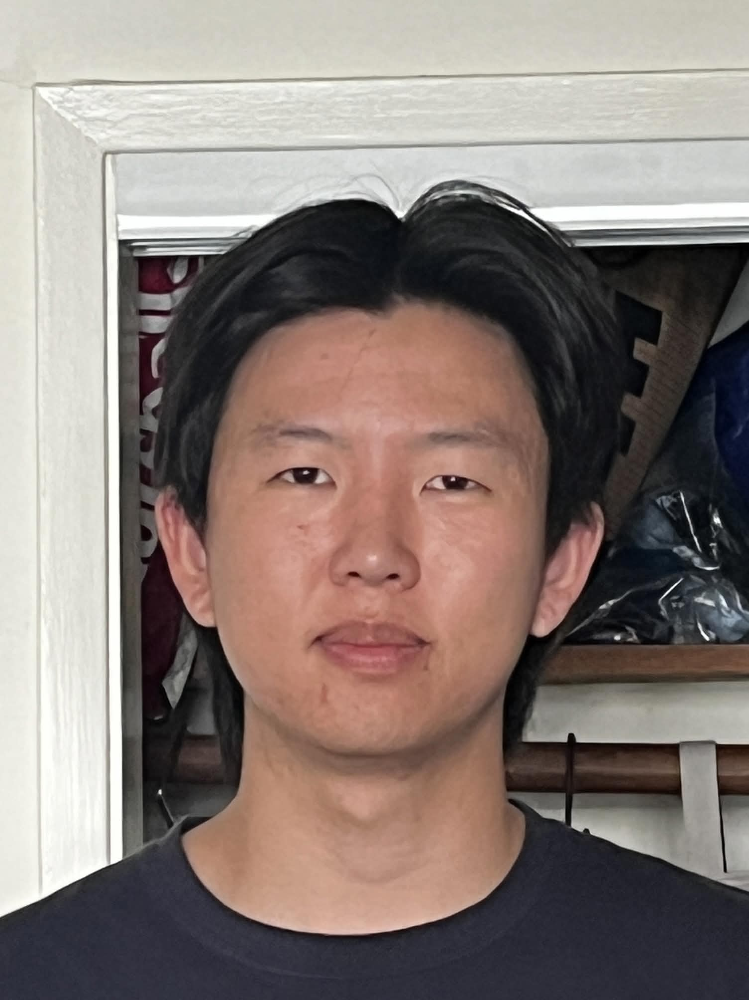
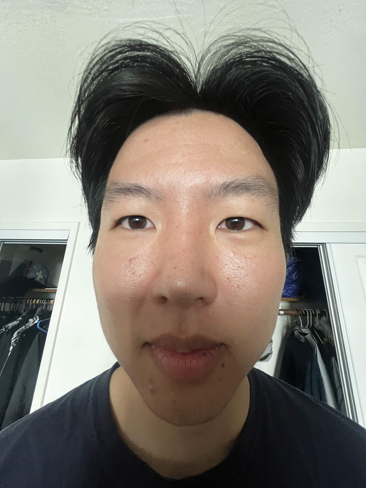
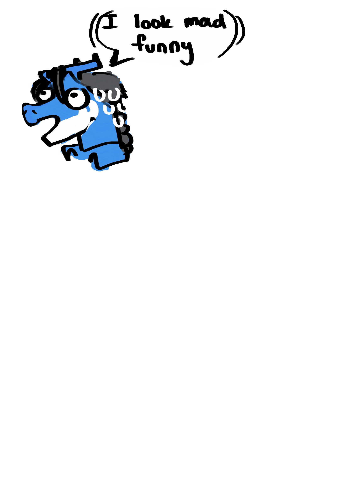
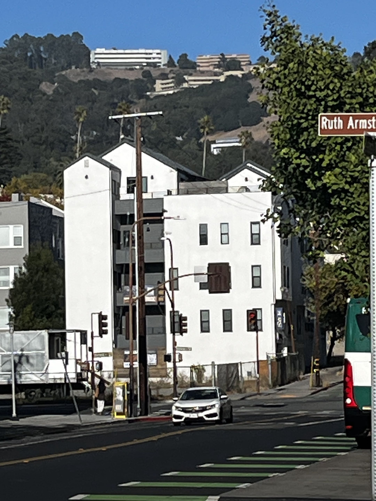
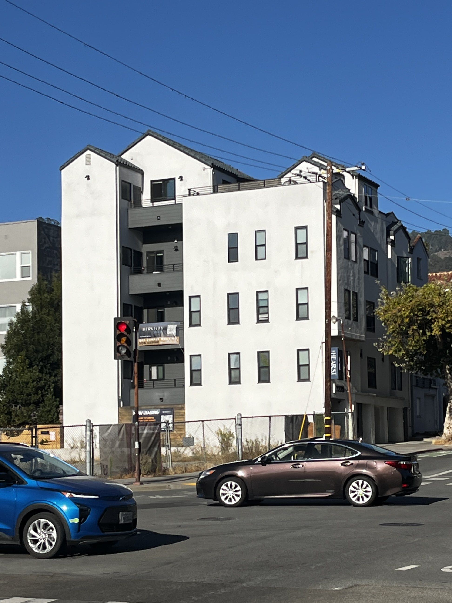
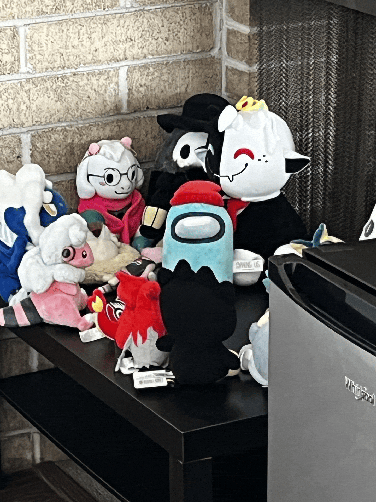

The few pictures above are taken closer the more left you go (~10ft to 1/2ft). I noticed that pictures close to the person (myself) distorted my proportions such as my big nose in order for my face to remain within the frame. This makes my face look wrongly big in comparison to everything else. Shots taken farther away look better because there's less distortion at play and in turn my proportions appear typically "normal". I look somewhat faithful to how people would typically see me in reality when the picture is taken farther away.


The above images again represent a building from far away to one up close. The first thing that stuck out to me was the proportional perspective, similar concept I expressed in Part 1, of the building to its relative environment including the telephone pole, the trees, and the road. The first image, the building lives aside the environment. The second, the building almost dominates over them, we lose the bg trees, the vanishing points further extend off horizontally, and oddly enough color levels slightly change (likely due to the camera focus on the white building itself). It's not just the composition, it's also the color balance - in the second photo, the sky appears darker, the tree on the right side is slightly brighter, and the yellow dead plants are a tad bit brighter. This can be explained by the Iphone's auto exposure. Upon focusing on the large building, the phone averages the colors in the frame to guess a neutral white point. Changing your focus area changes what is being measured.

All hail the amonggus! :D